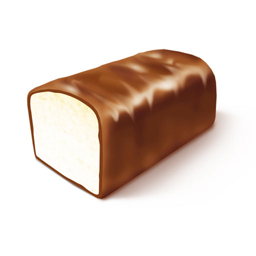

Сырок творожный глазированный в своей основе имеет натуральный творог, произведенный, в свою очередь, из качественного цельного молока.
В составе сырков не присутствует никакого растительного жира или других бесполезных, а порой даже вредных для здоровья добавок (консервантов, красителей и так далее).
У нас можно найти глазированные творожные сырки на любой вкус и цвет – с ванилином, вареной сгущенкой, какао и другими вкусными и натуральными добавками.
Для детей творожный сырок – отличный гостинец. Он поднимет им настроение, добавит бодрости и насытит юный, растущий организм.
